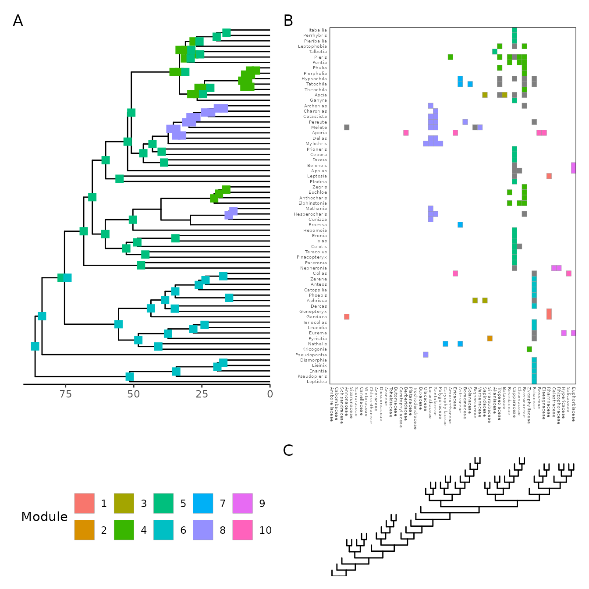

evolnets is an R package for summarizing the posterior
distribution produced by Bayesian inference of ancestral networks.
Currently, the only available approach specific for inference of
ecological interactions is based on the model of host-repertoire
evolution implemented originally in RevBayes
and then in TreePPL. If you are
unfamiliar with this model, check out this paper in Systematic
Biology where the model is introduced.
Even though the approach used here can be applied to a variety of biological systems, it was developed with host-symbiont interactions in mind, so I’ll be using the words host and symbiont. They could, in principle, be replaced by terms like host and parasite, resource and consumer, lower trophic level and higher trophic level, or any other two groups of nodes that form a bipartite network.
Examples of biological systems studied in papers that have used the
host repertoire model and evolnets include: plant-butterfly,
beetle-microbiota,
mimicry in butterflies
and beetles.
Set up
If you haven’t installed evolnets yet, do so first:
devtools::install_github("maribraga/evolnets")We will need a few packages:
and four pieces of data:
- Time-calibrated phylogenetic tree of the symbiont clade
- Phylogenetic tree of the host clade
-
history.txtoutput from RevBayes, which contains the sampled histories of host-repertoire evolution during MCMC - Matrix of extant interactions for plotting
evolnets includes example data which we’ll use in this
vignette. But when you use your own data, simply replace the
system.file() call with the path for your files.
Your phylogenetic trees need to be phylo objects, and
many tree files can be read into R using the ape or
treeio packages. One important step when reading in the
symbiont tree is to retrieve node labels from RevBayes. R and RevBayes
label the internal nodes of a tree in different ways, so it’s important
to export the symbiont tree from RevBayes to be able to use them in R
(using the write() function in RevBayes). Here’s how you do
it:
# read the symbiont tree exported from RevBayes
tree <- read_tree_from_revbayes(system.file("extdata", "tree_pieridae.tre", package = "evolnets"))
# we don't need node labels for the host tree, so you can read it using ape::read.tree()
host_tree <- ape::read.tree(system.file("extdata", "host_tree_pieridae.phy", package = "evolnets"))The evolnets function read_history is designed
specifically to read .txt files produced by RevBayes. As more inference
methods become available, we will expand the scope of this function.
history <- read_history(system.file("extdata", "history_thin_pieridae.txt", package = "evolnets"))Lastly, we need a matrix of extant interations.
matrix <- read.csv(
system.file("extdata", "interaction_matrix_pieridae.csv", package = "evolnets"),
row.names = 1) |>
as.matrix()As I said before, in this vignette we’ll use data that comes with evolnets. This data comes from a paper where we studied the evolution of interactions between Pieridae butterflies and their Angiosperm host plants. The results are not identical to the ones in the paper because we will use a subset of the MCMC samples in this example in order to reduce file size and speed up the analysis.
Now we can start extracting information from the inferred history.
Rate of evolution
Let’s calculate the average number of events (host gains and host losses) across MCMC samples. Of those, how many are gains and how many are losses?
(n_events <- count_events(history))
#> mean HPD95.lower HPD95.upper
#> 1 148.4752 121 178
(gl_events <- count_gl(history))
#> gains losses
#> 75.60396 72.87129We estimated that, on average, 148.5 events happened across the diversification of Pieridae, being 75.6039604 host gains and 72.8712871 host losses. Similarly, we can calculate the rate of host-repertoire evolution across the branches of the symbiont tree, which is the number of events divided by the sum of branch lengths of the symbiont tree.
(rate <- effective_rate(history,tree))
#> mean HPD95.lower HPD95.upper
#> 1 0.06170151 0.05028369 0.07397104
(gl_rates <- rate_gl(history, tree))
#> gain_rate loss_rate
#> 0.03141856 0.03028295In this case, we inferred that the rate of evolution is around 6 events every 100 million years, along each branch of the Pieridae tree.
Ancestral states at internal nodes
In line with a more traditional approach of ancestral state reconstruction, we can extract the posterior probability for each interaction between ancestral symbiont species and all hosts. First we need to choose which internal nodes we want to include (default is all nodes). For that, we need to look at the labels at the internal nodes of the tree file exported by RevBayes.
Important: RevBayes and R label tree nodes in different orders, so be sure to match labels in
history$node_indexto those in the tree file exported by RevBayes.
plot(tree, show.node.label = TRUE, cex = 0.5)First, we’ll look at the host repertoires of the deepest nodes in the tree: nodes 128, 129, 130, and 131 (the root).
deep_nodes <- c(128:131)
at_deep_nodes <- posterior_at_nodes(history, tree, host_tree, deep_nodes)
pp_at_deep_nodes <- at_deep_nodes$post_statesThere are 50 hosts in this data set, so pp_at_deep_nodes
has 50 columns. Let’s have a look at a subset of those:
pp_at_deep_nodes[, c("Fabaceae", "Capparaceae", "Rosaceae"), ]
#> Fabaceae Capparaceae Rosaceae
#> Index_128 0.2475248 1.0000000 0
#> Index_129 0.9702970 0.9009901 0
#> Index_130 0.9603960 0.8316832 0
#> Index_131 0.9603960 0.8415842 0We can see that Fabaceae was most likely an ancestral hosts for Pieridae butterflies. Capparaceae might have been a host at the origin of Pieridae, but most certainly starting at node “Index_128”. On the other hand, the probability that these butterflies used Rosaceae as a host is very small.
Instead of just looking at numbers, we can plot the ancestral hosts
for all internal nodes in the symbiont tree. For that, we have to choose
a probability threshold over which to plot (default is 0.9). Ancestral
states are colored by modules in the extant network, so we have to
either define the modules first or let it be done within the plotting
function. As this is a stochastic process, the modules will change a
little every time the plot_matrix_phylo() is called.
Let’s plot both trees, the interaction matrix, and the ancestral states at once, like so:
at_nodes <- posterior_at_nodes(history, tree, host_tree)
p <- plot_matrix_phylo(matrix, at_nodes, tree, host_tree)
# adjust text size in the second panel
p[[2]] <- p[[2]] + theme(axis.text = element_text(size = 4))
p
Ancestral networks at specific time points
The main goal of evolnets is to reconstruct the
evolution of networks. We can do this in two ways:
- Summarize the posterior probabilities of interactions into one network per time point
- Represent each time point by several networks sampled during MCMC
Summary networks
posterior_at_ages( ) finds the symbiont lineages that
were extant at given time points in the past and calculates the
posterior probability for interactions between these symbionts and each
host based on samples from the MCMC. The first element of
at_ages contains the sampled networks and the second, the
posterior probabilities.
ages <- c(60, 50, 40, 0)
at_ages <- posterior_at_ages(history, ages, tree, host_tree)Then, we can make different interaction matrices based on two things: the minimum posterior probability for an interaction to be included in the network, and whether we want a binary or a weighted network.
weighted_nets_50 <- get_summary_networks(at_ages, threshold = 0.5, weighted = TRUE)
binary_nets_90 <- get_summary_networks(at_ages, threshold = 0.9, weighted = FALSE)
#plotSampled networks
samples_at_ages <- get_sampled_networks(at_ages)Then, we can calculate network properties for each sampled network.
# calculate posterior distribution of nestedness
Nz <- index_at_ages_samples(samples_at_ages, index = "NODF", nnull = 10)
#plotYou can do the same for modularity, but the algorithm is much slower.